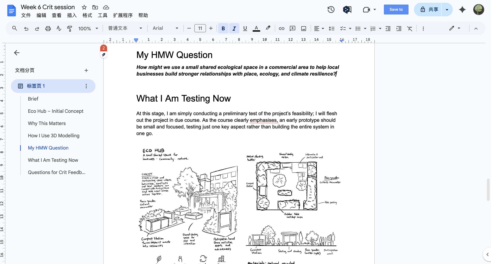
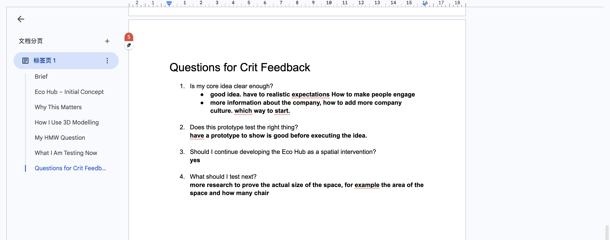

Week 6 Blog – Crit Feedback, Reflection, and Second Experiment Planning
The Experience
The focus of this week was the project’s first formal critique session. At the start of the class, the lecturer offered general advice on the blog, emphasising in particular that it should be treated as process documentation rather than merely a showcase for the final outcome. The lecturer pointed out that the blog should include messy making, failed attempts, changes in decision - making, and reflections on feedback, rather than just polished results. This advice has been very helpful to me, as it reminds me that unfinished work is, in itself, valuable evidence. I often wait until a piece looks fairly complete before documenting it, but this approach actually obscures the most important parts of the design process.
We then moved on to the Week 6 critique session. I presented my project direction based on the Business stream and introduced my Eco Hub concept. My presentation focused on how businesses and institutions can move from symbolic sustainability towards genuine engagement with the ecosystem. I emphasised that I was using 3D modelling not simply to create a visually appealing model, but as a design testing tool.
.jpg)
I explained that the Eco Hub is a small shared ecological space located in a commercial area, featuring compost stations, rain gardens, a native plant area, a communal seating area, and an information board for participants. Its aim is to make climate resilience more visible, easier to understand and more accessible to the public.
I also presented my How Might We question:
The main purpose of the crit was not to prove that my idea was correct, but to understand whether I was testing the right thing and whether Eco Hub was the right direction to continue.
Reflection on Action
The most valuable feedback I received during this critique was that my overall concept is clear and heading in the right direction, but it needs to be made more realistic and concrete, particularly in terms of how people would actually engage with this space.

Some students have suggested that this is a good idea, but I need to give more serious thought to realistic expectations, particularly how to get people to genuinely engage with the Eco Hub, rather than simply producing a visually attractive concept. This has made me realise that merely presenting a space is not enough; I also need to explain people’s behaviour and motivation.

Another piece of feedback is that I need to include more information about the businesses themselves. For example, what types of companies would use this space? How does it tie in with company culture? From a business perspective, where should the most sensible point of entry be?
This feedback has been extremely helpful, as it has made me realise that my project is currently stronger on the ‘space’ side, whilst the ‘business’ side is not yet fully developed. I have designed the environment, but have not yet explained the institutional relationships underpinning it clearly enough.
Regarding the second question, “Does this prototype test the right thing?”, the feedback I received was that having a prototype to demonstrate before actually implementing the entire idea is, in itself, a good start. This confirmed to me that using sketches and early modelling for testing is the right approach at this stage.
As for the third question, “Should I continue developing Eco Hub as a spatial intervention?”, the feedback was very clear: yes. This has given me greater confidence to continue developing it as a spatial intervention, rather than shifting entirely towards service design or internal workplace systems.
For the final question, ‘What should I test next?’, the main recommendation is that I need to conduct further research to ascertain the actual scale of this space. For example: how much floor space is actually required? How many people can it accommodate? How many seats are needed? And can this intervention realistically be integrated into a commercial setting?
This feedback has significantly shifted the direction of my thinking. I have realised that my next round of experiments should focus on demonstrating whether the Eco Hub is truly viable in practice. What this project needs most at present is stronger evidence, a clearer understanding of user behaviour, and a more practical grasp of business participation. This represents a more promising direction than simply adding more visual details.
Theory
This week has once again reinforced an important point: reflection should not merely be a summary. True reflection involves acknowledging failures, biases and blind spots, and using evidence to support learning and growth. This is highly relevant to my project, as I have realised that my background in 3D modelling has strongly influenced my design decisions. I naturally tend to prioritise spatial solutions, as this is the area in which I feel most confident. However, this has also created a blind spot: I may choose modelling not because it is the most suitable approach for the problem at hand, but simply because it is the most familiar to me.
The blog post also specifically mentions that the ‘Preparation’ stage in the Integrated Reflective Cycle is not merely a to - do list, but should be a genuine action plan that sets out what needs to be improved, how to improve it, and which resources or methods will support this improvement. This has prompted me to give more serious thought to the second round of experiments. I cannot simply move on to the next version; instead, I need to clarify exactly which skills, concepts or uncertainties I wish to address.
Preparation
The biggest takeaway from this critique is that my second round of experiments will be much more focused.
Instead of continuing to expand the full Eco Hub concept, my next prototype will focus on one single question: Can one small ecological interaction create visible participation and belonging?
For example, I might test just one specific element—such as a compost station featuring participation prompts, or a rain garden incorporating business involvement—rather than the entire Eco Hub system. This second round of experiments will help me clarify whether the value stems from the space itself or from the interaction between people and the space. I also plan to improve my process documentation. Following the advice from the Week 6 blog, I will include more rough sketches, failed attempts, captions, and explanations of why each image is important, rather than simply presenting polished outcomes.
My action plan for next week is:
- simplify the Eco Hub prototype into one focused interaction
- continue rough modelling and testing in Blender
- compare spatial intervention with service-based participation
- improve blog documentation quality with clearer process evidence
- use critique feedback to define stronger second-cycle experiments